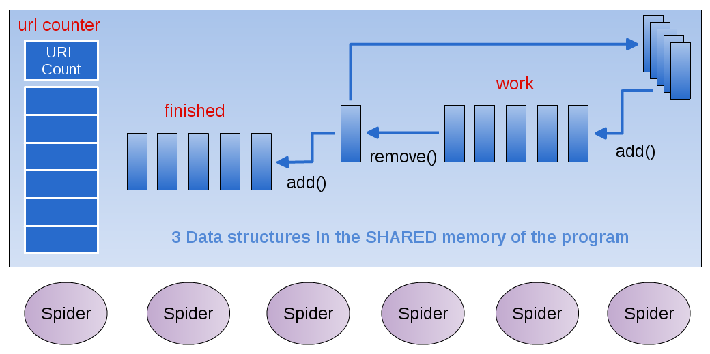

URL Spider¶
Environment¶
- On Machines with multiple cores
- Threads within a program can enable concurrency
- Run in parallel on multiple cores
Threads can share data in memory
- Ideally, needed work can get done faster
- There is a speedup in the computation when using multiple threads as opposed to using 1 thread
- Threads are not a concept associated with clusters of machines
Executing sequentially¶

Single Spider accesses the data and does all the work
One spider¶
- The original web crawling spider that you’ve been working on looks like this:
- 3 data structures holding information
- Accessed individually by the Spider class
The Spider class does all the work, one step at a time
- In this case, the ‘work’ is piling up!
- Each page that is visited has many more links to follow
- What might make this process faster so that more work gets done?
Executing concurrently¶

Multiple Spider ‘Runnable’ Threads all access the shared data
Multiple Spider ‘threads’¶
- What happens when several threads need to read and write from the ‘work’ data structure?
Imagine yourself as a spider working with a group of others
- What actions are involved when you:
- Grab a new page to work on from the work data structure
- Save new links to the ‘work’ data structure
- Store the completed page in ‘done’ data structure
Key point: locking¶
- For certain operations on a shared data structure,
- Other threads must be barred from accessing when another thread is executing that operation
These operations must be atomic: only one thread can be executing this operation at a time
Which operations on the work data structure should be atomic?
How to do this in Java¶
Creating Threads in Java¶
- Build a class that implements the Runnable interface:
public interface Runnable {
abstract public void run();
}
- In a class containing ‘main’, create each thread and pass it a new instance of the Runnable class
Sharing the Data¶
- Create your shared data structures in a separate class
- Create one instance of the shared data class in the ‘main’ class
- Pass that instance of the shared data to each instance of the Runnable class via the constructor